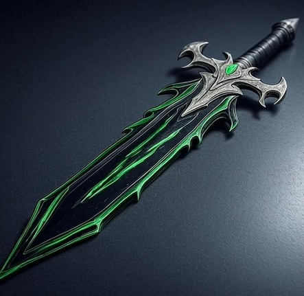

Dark Blade
Uma das armas mais poderosas do jogo. Possui golpes de energia sombria e alta velocidade de corte.
Uma das armas mais poderosas do jogo. Possui golpes de energia sombria e alta velocidade de corte.
Forjada sob o luar, esta espada emite um brilho roxo e corta com energia demoníaca.
Espada feita de pura energia luminosa. Velocidade e precisão definem esta arma divina.
Uma das armas mais poderosas do jogo. Possui golpes de energia sombria e alta velocidade de corte.
Forjada sob o luar, esta espada emite um brilho roxo e corta com energia demoníaca.
Espada feita de pura energia Negra. Velocidade e precisão definem esta arma adaga.